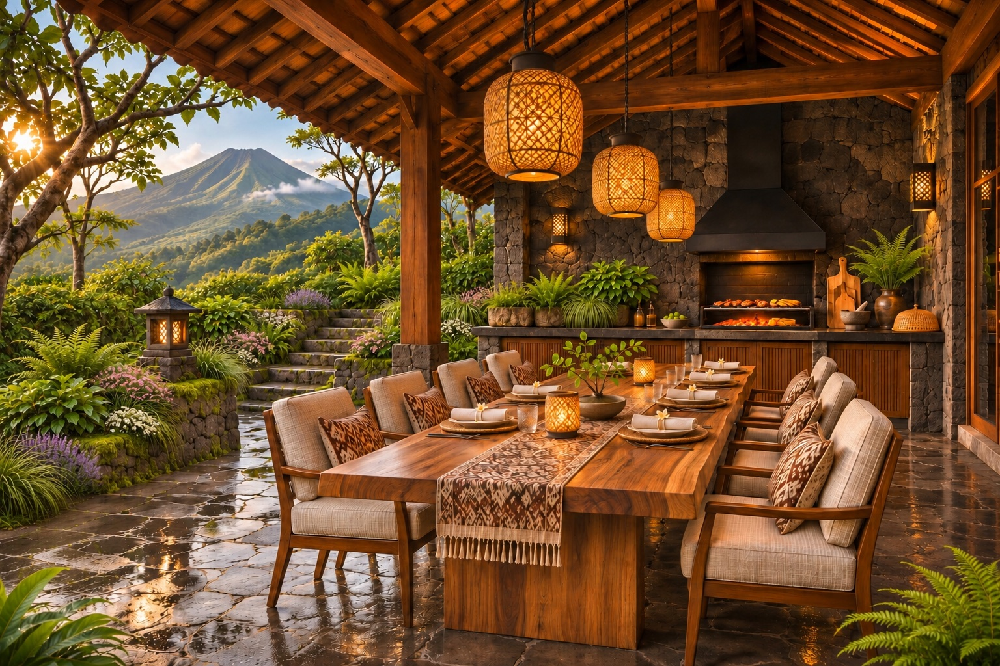

A veranda for all seasons
Deep cover creates a useful outdoor room, with seating arranged for conversation and views into the garden.

Private lodges / Style 1
A generous veranda becomes the center of the home.
Inside and outside, connected
The Garden Lodge arranges daily life around a sheltered edge between house and garden. Open the doors and the lounge extends outdoors; step a little further and you are beside the water, surrounded by planting.

The living room
Linen upholstery, woven rugs and substantial timber furniture balance the dark stone walls. Large doors frame the greenery while deep eaves temper the light.
The palette stays warm and tactile, with space for books, ceramics and objects collected over time.
Your private BBQ terrace

A generous table sits beneath the timber roof, close to a proposed built-in BBQ and preparation counter. The garden forms the backdrop to long lunches and evening dinners.
Locating the cooking and dining area together keeps entertaining comfortable, while quieter corners of the veranda remain available for reading and rest.
Deep cover creates a useful outdoor room, with seating arranged for conversation and views into the garden.
Stone paving, planted edges and space for loungers make the pool terrace part of the home’s daily routine.
Layers of planting define outdoor spaces and screen neighboring views while keeping a sense of openness.
Your next chapter
Email us to discuss a private residence and the collection that interests you.